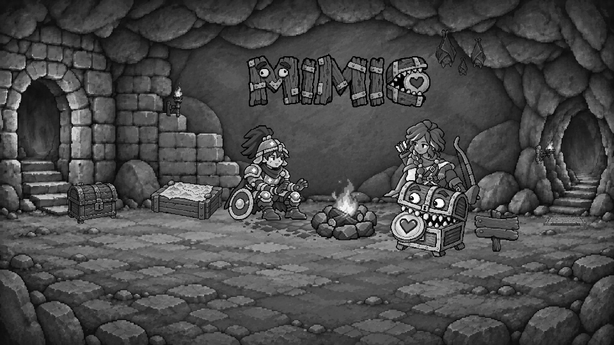
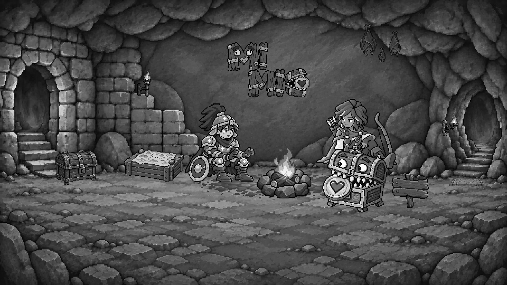
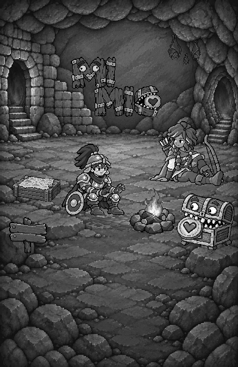

Landing A — 無法師與標題排列
awaiting-calibration · reviewOnly: true · runtimePromotion: false
A 為唯一基準：只移除法師，其餘人物、道具、火光與地面不動。桌機只比較字標排列與容納排列所需的等比尺寸／牆面落點；五個字在兩行內同尺度，不要求兩個候選的字高相同。
手機統一使用交錯版：窄螢幕下兩個桌機候選會顯示相同手機圖，不是兩種手機方案。B 石壁結合／第三 C 亮度精修仍留待後續，這輪不是新 logo 或亮度選擇。
桌機單行 MIMIC：標題定位
只有標題可移動，尺寸／亮度／其餘素材鎖定。目前使用桌機橫向構圖；切換版本會保留本次載入的各自位置。
拖動標題；聚焦後方向鍵移動 1 logical px，Shift＋方向鍵移動 10。關閉定位看乾淨預覽。重整不保存，請先複製位置。
圖片載入中。
圖片載入中。
只限制在場景內以防裁切；是否跨洞口／岩縫或遮住伙伴仍需目視。貼回 JSON 後才另行套用，不會自動修改檔案或核准。
手機兩行 MI／MIC：標題定位
只有標題可移動，尺寸／亮度／其餘素材鎖定。目前使用手機直向構圖，不是桌機裁切；切換版本會保留本次載入的各自位置。
拖動標題；聚焦後方向鍵移動 1 logical px，Shift＋方向鍵移動 10。關閉定位看乾淨預覽。重整不保存，請先複製位置。
圖片載入中。
圖片載入中。
只限制在場景內以防裁切；是否跨洞口／岩縫或遮住伙伴仍需目視。貼回 JSON 後才另行套用，不會自動修改檔案或核准。
桌機：單行 MIMIC
字標 288 × 84 logical px；左上 385, 84；輸出 1920 × 1080。
桌機：上左 MI／下右 MIC
字標 157 × 104 logical px；左上 429, 80；輸出 1920 × 1080。
手機：共用交錯兩行版
字標 148 × 98 logical px；左上 116, 93；輸出 390 × 600。
三張真實灰階輸出



既有字標參照與新來源
下圖為未套用共同色調的來源；場景使用同一 brightness 0.82／saturation 0.72 整理，沒有 CSS 個別亮度差異。

新交錯透明 ImageGen source · 實際 prompt
已核准身份與顆粒參照


本輪判斷
- 移除法師後更鬆，仍是抵達有人陪伴的暖火休息處。
- 上左 MI／下右 MIC：字形等大、略微輪廓重疊，眼睛、愛心及筆畫沒有被遮住。
- 字標完整落在連續岩壁中，不跨洞口、岩縫、天花板、蝙蝠或人物。
- 火與伙伴仍是焦點，地圖、探索物件和可加入的地面仍清楚。
- 寶箱、地圖箱與陷阱位置這輪不調整，下一輪再逐項審核。
登入／CTA 只保留 live review 錨點示範，不連接認證或互動。三種帳務語意、鎖定期間規則均未變動；Scenes 未核准，不提升 runtime。字形與岩壁融合必須目視確認，manifest 標籤與測試不能代替你的視覺判斷。
exact SHA-256 與實際尺寸
| base | 1db896df38f84872ab5396d701acdee7edc84b6d58ba90c5ae8398cc66415ac3 |
| lineage | 8e99f68035b67d92340a7247e909791458a14129090eac5a6a08bc9efd6e60cc |
| prompt | 22b381ea2c5e46be305d585353e02a109c2b2014b486aaac936e226fbeee32d7 |
| single source 256 × 75 | 5a1cfc2a7d96c15a467c8fa2f3c869d23a3811a096edd121a76a9f952b59760c |
| single master 256 × 75 | 40292ed6c2d12383b4eaf255e5023b21bc0ab716eda1044acc17a1a90448cec7 |
| staggered source 1536 × 1024 | bf6a6596dd8f978e4a34b751f49ef3687d2eb74a94ea57d8fe5f40e715ae3f90 |
| staggered master 256 × 170 | c992e21f8b8821ec508cb6998ed940a078ac18c3df7abd161c543bb99ce002ca |
| desktop-single logical 960 × 540 | af8b73f346729ed0c8a3a49dc59c90f0ccdd9c6c9f1d090ee2c0dce53b37e93c |
| desktop-single color 1920 × 1080 | a2a75a28cbf12f8058357bf20b866092a295021ec95177d0543e5d96b09a4566 |
| desktop-single gray 1920 × 1080 | 62374f6cc3d4611b7b7f301c7fba2fdd86c35d7aa04cdc12371a009534c0f93b |
| desktop-single title 288 × 84 | 4ecc5bc6788f34854aac81a54d35b85fad9648c9f9d6499200f825246976ff31 |
| desktop-staggered logical 960 × 540 | 37b13aad4fd0148592f51e681c879deeeef37f6e1c9f78f677ea38d08e52e9fb |
| desktop-staggered color 1920 × 1080 | c510c247b7c1642d646f5cd1528268ddab06967cd0ab0dc61a313fd7edabd446 |
| desktop-staggered gray 1920 × 1080 | 4da2414b16a3044676fb5d9e45c390282efc69960d861268f919015a296aec1f |
| desktop-staggered title 157 × 104 | 1897d9b9fb2345a5cb890333f5e76fb7cfda9df59f5d3f3a5cf98ba0978b5dee |
| phone-staggered logical 390 × 600 | c7cdd3a370255054870dccf5b65939d228dacb8d790570884a0e64cbbd17997a |
| phone-staggered color 390 × 600 | c7cdd3a370255054870dccf5b65939d228dacb8d790570884a0e64cbbd17997a |
| phone-staggered gray 390 × 600 | 9036fee6745fadbb09a18598853c9a4f656aa2c7fa32727c5c1b1fc2ad0ed3b2 |
| phone-staggered title 148 × 98 | 8fd7d677df46cc77478518de2a9f68ff77b8ae4d28deb25e6b11ad5ba6ee8f1c |